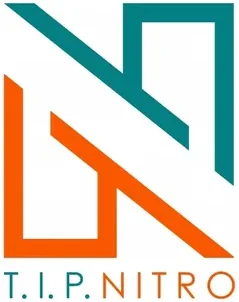

TIP NITRO — TBI
Technological Institute of the Philippines (TIP) · NCR
TIP NITRO is the Technology Business Incubator (TBI) of the Technological Institute of the Philippines (TIP), located in Quezon City. As part of the DOST-PCIEERD SCALE-NCR cluster of Metro Manila TBIs, TIP NITRO supports technology startup development among TIP engineering and technology students and alumni, channeling TIP's polytechnic strengths in engineering, ICT, and applied sciences into practical startup commercialization.
- Category
- Technology Business Incubator
- Host institution
- Technological Institute of the Philippines (TIP)
- City
- Quezon City
- Region
- NCR
- Operating status
- Operating
About the Center
TIP NITRO is the current SCALE-NCR designation for TIP's incubation program, encompassing the institute's focus on Clean Technology and ICT-driven engineering innovations. The center provides startup founders with mentorship, business development support, and access to DOST's technology commercialization programs — connecting TIP's engineering talent to the broader Metro Manila and national startup ecosystem.
Programs & Services
- Startup incubation for technology entrepreneurs from TIP's engineering and technology programs
- Business development coaching: business model canvas, market validation, and pitch preparation
- Mentoring from TIP faculty and industry practitioners in engineering, ICT, and business
- IP guidance and technology transfer support for student inventors and startup founders
- Access to DOST-PCIEERD funding and demo day connections through the SCALE-NCR ecosystem
- Prototyping and lab access support for hardware and engineering startup teams
- Linkages to fellow SCALE-NCR TBIs and the Metro Manila startup community
Contact
Sources & references
- tip.edu.ph/home/manila-tech-hubs-strengthen-ph-startup-ecosystem
- gadgetsmagazine.com.ph/technology/innovation/t-i-p-nitro-incubation-program…
- bworldonline.com/sparkup/2023/11/13/556858/manila-based-tech-hubs-join-forc…
Details are drawn from public records and the sources above, July 2026.
Startupreneur Innovation Hub · synced from the Notion catalog (July 2026) · status: published.